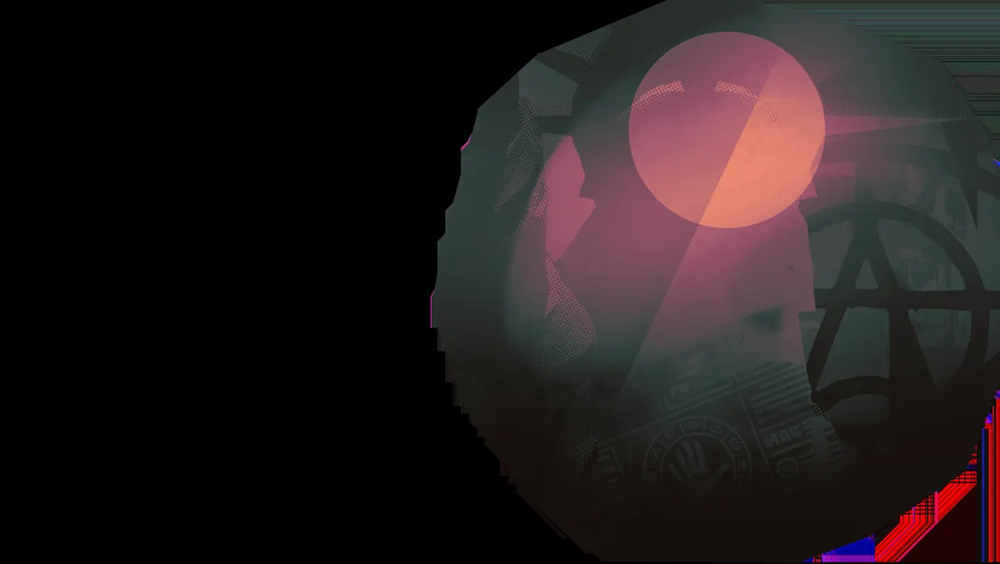
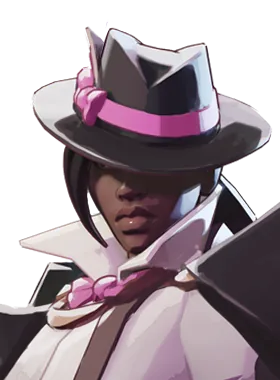

Bruxa idosa que lança maldições nos adversários.
História
Existem algumas coisas que a maioria dos habitantes de The Cursed Apple espera experimentar em algum momento de suas vidas.
Veja um show da Broadway.
Patinação no Gelo no Rockefeller Center durante a época de Natal.
Receba gritos da Lady Pigeon do Central Park.
Porque Baba é mais do que apenas uma velha que alimenta pombos espirituais no parque... ela é uma instituição. Uma força da natureza entrelaçada na tradição da cidade de Nova York. É verdade que ela se sentou no mesmo banco todos os dias durante os últimos 50 anos, faça chuva ou faça sol? Talvez. Ela é REALMENTE a líder do The Soho Coven? Quem pode dizer. Uma coisa é certa... ela é nova-iorquina. E ela não vai ficar sentada assistindo um bando de turistas destruir Manhattan em busca de poder.
História oficial do jogo, traduzida automaticamente para o português.
Números reais
Habilidades
Lança um fio que segue sua mira e explode ao longo do caminho, causando dano espiritual e roubando Espírito do inimigo.
Estica as pernas do banco, dando velocidade, saltos maiores e resistência a debuffs e a corpo a corpo, com um chute e um golpe no chão.
Joga um bule de chá que cria uma área alternando entre barreira, Silêncio ou queimadura que causa dano espiritual contínuo.
Cobre os alvos de pão, acumulando lentidão; então pombos os bombardeiam com dano espiritual e transformam cada alvo em pombo.
Builds mais usadas
67.878 partidas registradas com esta build.
Regeneração Extra (800) · Taxa Extra (800) · Regeneração Mística (800) · Golpe Espiritual (800) · Regeneração Radiante (3.200) · Impulsionador de cura (1.600) · Barreira Reativa (1.600) · Healbane (1.600) · Medalhão Restaurador (1.600) · Roubo de Vida Espiritual (1.600)
30.278 partidas registradas com esta build.
Taxa Extra (800) · Regeneração Mística (800) · Regeneração Radiante (3.200) · Golpe Espiritual (800) · Regeneração Extra (800) · Impulsionador de cura (1.600) · Pulso de Tormento (3.200) · Resiliência à bala (3.200) · Barreira Reativa (1.600) · Revista Titânico (1.600)
29.907 partidas registradas com esta build.
Taxa Extra (800) · Regeneração Extra (800) · Regeneração Mística (800) · Regeneração Radiante (3.200) · Golpe Espiritual (800) · Impulsionador de cura (1.600) · Pulso de Tormento (3.200) · Medalhão Restaurador (1.600) · Barreira Reativa (1.600) · Resfriamento da compressão (1.600)
Confrontos reais
 Solomon — 60.6% de vitória
Solomon — 60.6% de vitória Shiv — 58.4% de vitória
Shiv — 58.4% de vitória Mirage — 58.4% de vitória
Mirage — 58.4% de vitória Sinclair — 58.3% de vitória
Sinclair — 58.3% de vitória Pocket — 57.9% de vitória
Pocket — 57.9% de vitória The Doorman — 57.3% de vitória
The Doorman — 57.3% de vitória
 Rat King — 45.5% de vitória
Rat King — 45.5% de vitória Paige — 46.8% de vitória
Paige — 46.8% de vitória Seven — 47.3% de vitória
Seven — 47.3% de vitória Graves — 47.3% de vitória
Graves — 47.3% de vitória Haze — 47.6% de vitória
Haze — 47.6% de vitória Ivy — 49.4% de vitória
Ivy — 49.4% de vitória
Ver a página de counters do Baba
O que upar primeiro
Nível por nível, na ordem que os jogadores mais usam em partidas de verdade. A porcentagem mostra quantos escolheram aquela habilidade naquele nível.
Melhores duplas
Heróis que mais ganham jogando junto com ele, em partidas reais (pelo menos 1.500 partidas juntos).
- Graves60,5%
- Paige60,5%
- Rat King58,6%
 Kelvin58,5%
Kelvin58,5%- Seven57,9%
- Shiv46,6%
- Pocket46,7%
- Sinclair47,4%
Rota (lane)
Na rota, cada lado joga em dupla. Estes números são de confrontos reais: a diferença de almas é medida com o jogo já começado, então almas no verde significa que ele costuma estar na frente.
- Seven — 45,3% de vitória −380 almas (3.112 partidas)
- Rat King — 45,5% de vitória −1.028 almas (34.402 partidas)
- Paige — 45,9% de vitória −61 almas (7.134 partidas)
- Haze — 46,7% de vitória −1.290 almas (9.234 partidas)
- Graves — 47,1% de vitória +355 almas (5.691 partidas)
 Dynamo — 49,3% de vitória +61 almas (3.257 partidas)
Dynamo — 49,3% de vitória +61 almas (3.257 partidas) Lash — 50,6% de vitória −527 almas (3.475 partidas)
Lash — 50,6% de vitória −527 almas (3.475 partidas)
Wraith — 51,6% de vitória −696 almas (3.869 partidas)
 Silver — 61,1% de vitória −119 almas (2.167 partidas)
Silver — 61,1% de vitória −119 almas (2.167 partidas)- Solomon — 60,4% de vitória +573 almas (8.398 partidas)
 Apollo — 59,6% de vitória +627 almas (1.357 partidas)
Apollo — 59,6% de vitória +627 almas (1.357 partidas)